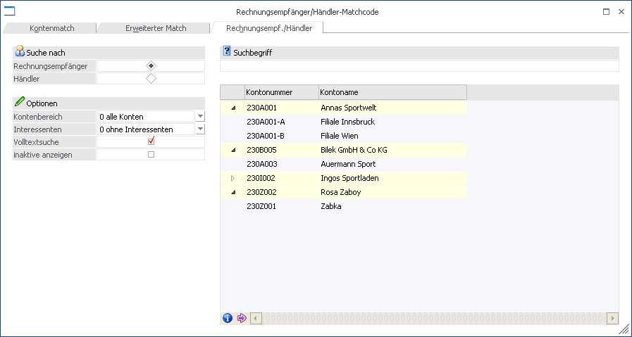
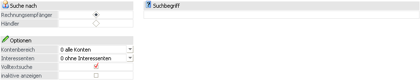
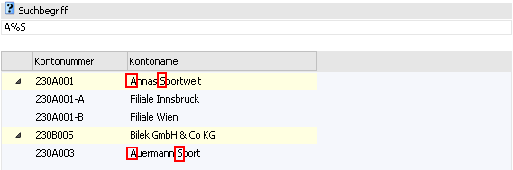
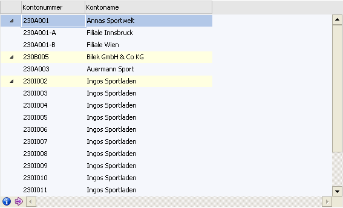
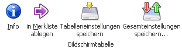
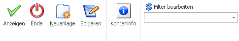

Wenn der Fokus in dem Feld "Kontonummer" oder "Interessentennummer" liegt und das Lupen-Symbol bzw. die Taste F9 gedrückt wird, dann öffnet sich das Programm "Konten - Matchcode". An dieser Stelle kann gezielt nach Personenkonten, Interessenten und Sachkonten gesucht werden.
Hinweis
Wenn in dem Feld "Kontonummer" bzw. "Interessentennummer" ein Teil der gesuchten Nummer oder Namen (Bezeichnung) eingetragen wurde und die Taste F9 gedrückt wird, dann wird diese Eingabe als Suchbegriff übernommen und die Suche direkt gestartet.
Grundsätzlich unterteilt sich der Matchcode in die folgenden Register, wobei immer der Matchcode in dem zuletzt verwendeten Register aufgerufen wird:
ü Konten - Match
In diesem Register kann durch Eingabe eines Suchbegriffs innerhalb der Nummer und dem Namen (der Bezeichnung) gesucht werden.
ü Erweiterter Match
In diesem Register kann aufgrund einer zuvor angelegten Suchstrategie nach Personenkonten, Interessenten oder Sachkonten gesucht werden. Die Spalten in der Suchergebnistabelle werden dabei ebenfalls über die Suchstrategie definiert.
Hinweis
Die unterschiedlichen Suchstrategien werden in dem Programm "Vorlagen Anlage" (WinLine START - Vorlagen - Vorlagen Anlage - Stammdaten Personenkonten - Vorlage als "Suchstrategie") definiert.
ü Rechnungsempf./Händler (aktuelles Register)
In diesem Register kann nach Konten, welche einen Rechnungsempfänger oder einen Händler hinterlegt haben, gesucht werden,
Register "Konten - Match"

Im Rechnungsempfänger/Händler-Matchcodefenster werden Konten die einen Rechnungsempfänger oder einen Händler hinterlegt haben, angezeigt. Die Darstellung der Konten in der Tabelle erfolgt in einer Baumstruktur.
Selektionsbereich

Ø Suche nach
Durch die Auswahl "Suche nach" kann entschieden werden, ob "Rechnungsempfänger" mit den dazugehörigen Konten oder Händler mit den dazugehörigen Konten angezeigt werden sollen.
Ø Kontenbereich
An dieser Stelle kann der Kontenbereich selektiert werden, in welchem gesucht werden soll. Zur Auswahl stehen folgende Möglichkeiten:
ü 0 - Alle Konten
ü 1 - Debitoren
ü 2 - Kreditoren
Ø Interessenten
Hier kann gewählt werden, ob auch Interessenten in die Suche mit eingezogen werden sollen. Folgende Auswahlen sind dabei möglich:
ü 0 - ohne Interessenten
ü 1 - mit Interessenten
ü 2 - nur Interessenten
Ø Volltextsuche
Standardmäßig erfolgt die Suche linksbündig. Durch Aktivierung der Option "Volltextsuche" wird der Suchbegriff innerhalb des gesamten Wertes gesucht.
Beispiel
Es wird im Namen der Suchbegriff "sport" eingegeben. Erfolgt die Suche ohne Volltext, dann wird der Suchbegriff "sport%" übergeben. Wird die Suche hingegen mit Volltext durchgeführt, dann wird der Suchbegriff "%sport%" übergeben.
Ø Inaktive anzeigen
Durch Aktivierung dieser Option werden auch inaktive Konten bzw. Interessenten in der Ergebnistabelle angezeigt.
Ø Suchbegriff
Durch Eingabe und Bestätigung eines Suchbegriffs wird in der Konto- bzw. Interessentennummer und dem Kontonamen gesucht und die Suchergebnistabelle entsprechend aufgebaut.
Neben der Eingabe eines kompletten Begriffs ist es hierbei auch möglich mit Platzhaltern (in Form eines "%"-Zeichens) zu arbeiten.
Beispiele
Es wird nach dem Begriff "A%S" gesucht. Als Ergebnis werden dann z.B. folgende Einträge angezeigt:

Suchergebnistabelle

In der Ergebnistabelle werden standardmäßig immer folgende Spalten angezeigt:
ü Kontonummer
ü Kontoname
ü Bezeichnung 2
Ø Optionale Spalte
Neben den Standard-Spalten kann über das Kontextmenü der rechten Maustaste (Funktion "Spalten anzeigen / verstecken") jederzeit folgende Spalte hinzugefügt bzw. entfernt werden:
ü Zeilennr.
Es wird pro Datensatz eine aufsteigende Nummer angezeigt. Wenn der Fokus in der Spalte liegt kann anschließend durch Eingabe der Nummer direkt zum Datensatz gewechselt werden.
Buttons in der Suchergebnistabelle

Ø Info
Durch Anklicken des Buttons "Info" wird die "Konteninfo" geöffnet, in welcher die Daten des markierten Kontos angezeigt werden.
Ø in Merkliste ablegen
Durch Anklicken des Buttons "in Merkliste ablegen" werden die zuvor selektiert Einträge in eine Merkliste / Kampagne übergeben.
Ø Tabelleneinstellungen speichern
Die Spalten einer Tabelle können grundsätzlich an beliebige Positionen verschoben, bzw. in der Breite entsprechend angepasst werden. Durch Anwahl des Buttons "Tabelleneinstellungen speichern" werden die Einstellungen benutzerspezifisch gespeichert und bei dem nächsten Aufruf des Programmpunktes wieder vorgeschlagen.
Ø Gesamteinstellungen speichern
Im Gegensatz zu "Tabelleneinstellungen speichern" können mit "Gesamteinstellungen speichern" mehrere Tabellenaufbauten gespeichert und nach Wunsch geladen werden. Zusätzlich werden Sonderfunktionen der Tabelle (z.B. "Spalte gruppieren") ebenfalls bei der Speicherung bedacht.
Buttons

Ø Anzeigen
Durch Anklicken des Buttons "Anzeigen" bzw. durch Drücken der F5-Taste wird die Suche ausgelöst.
Ø Ende
Durch Anwahl des Buttons "Ende" bzw. der Taste ESC wird der Programmbereich geschlossen.
Ø Neuanlage
Durch Anwahl des Buttons "Neuanlage" kann direkt ein neues Konto anlegen werden, wobei es vom ausgewählten Kontenbereich abhängig ist, ob das Fenster für Sachkonten oder für Personenkonten geöffnet wird.
Ø Editieren
Durch Anklicken des "Editieren"-Buttons kann das Konto, welches in der Suchergebnistabelle markiert wurde, direkt editiert werden.
Ø Konteninfo
Wird dieser Button gedrückt, so werden alle Konten, die sich aktuell in der Ergebnistabelle befinden, in einer Konteninfo am Bildschirm dargestellt.
In dieser Konteninfo stehen alle Variablen der View 50 zur Anzeige zur Verfügung, d.h. es erfolgt keine Anzeige für die Kontenbereiche "Sachkonten", "Zahlungsmittelkonten" oder "Anlagenkonten".
Hinweis 1
Die Liste dient nicht nur als Auswertung, sondern auch als erweiterte Matchcodeauswahl. D.h. wenn ein Konto aus der Liste angewählt wird, dann wird dieses Konto in das entsprechende Kontofeld eingetragen und der Matchcode geschlossen.
Hinweis 2
Die Einstellung, ob die Info ausgegeben werden soll, wird benutzerspezifisch gespeichert.
Ø Filter bearbeiten
Durch Anwahl des Buttons "Filter bearbeiten" kann die Kontensuche nach frei definierbaren Kriterien eingeschränkt werden.